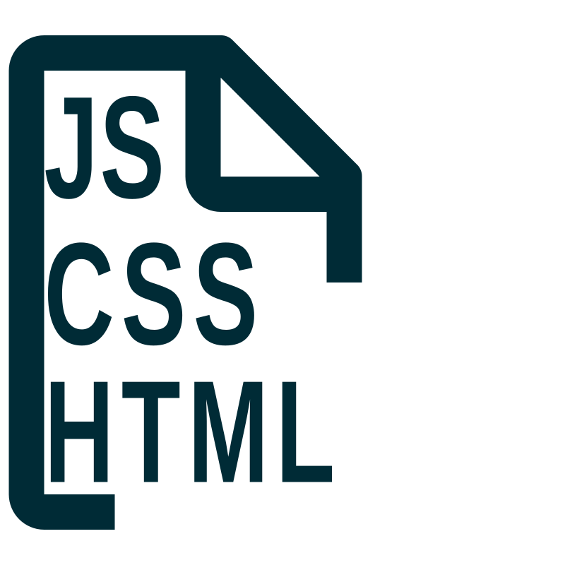
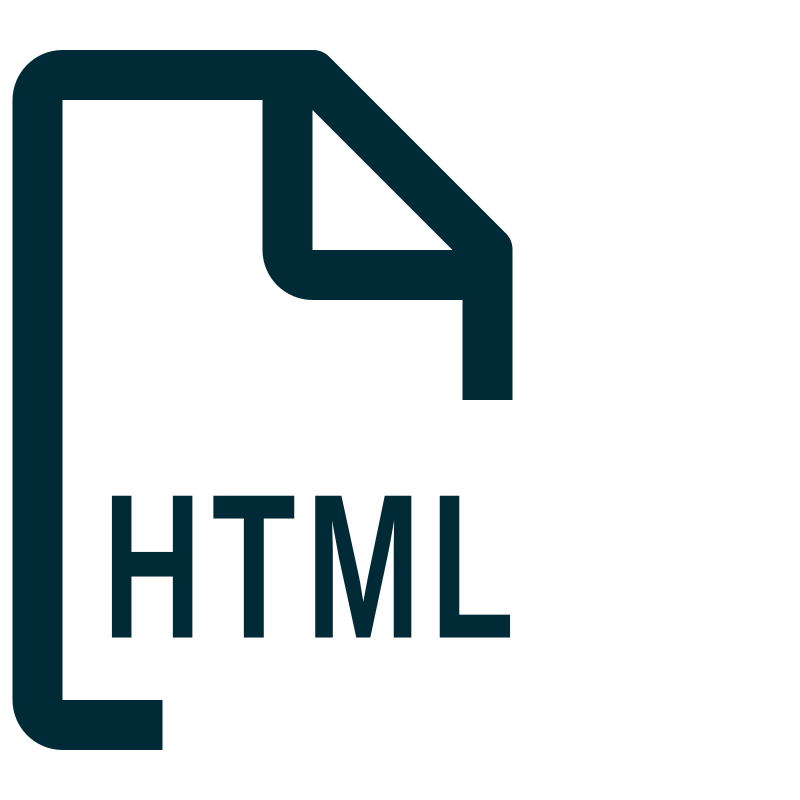
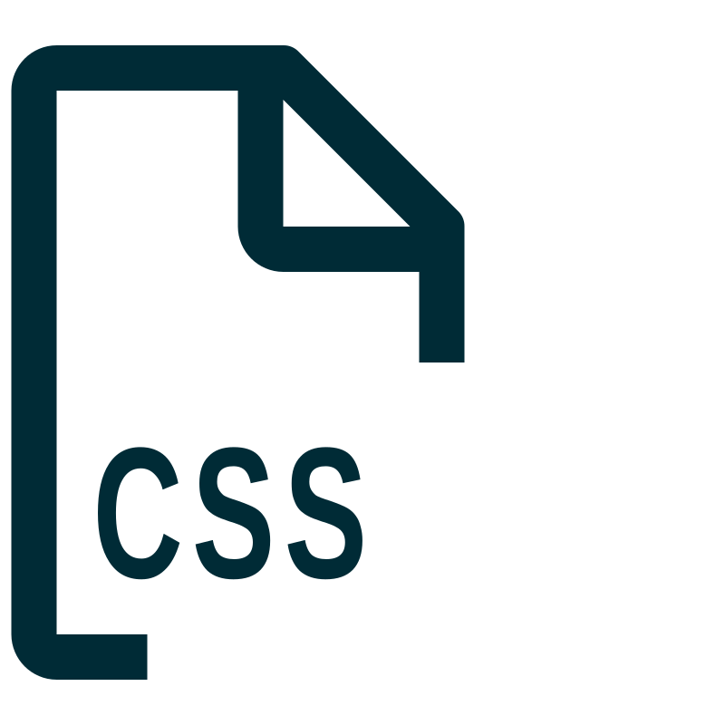
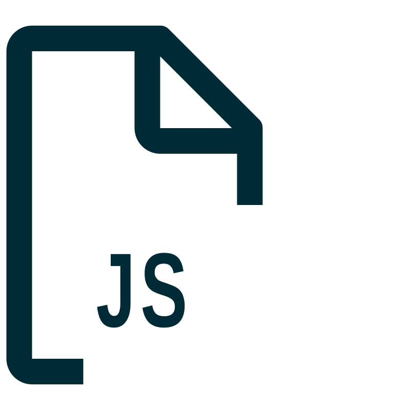

⌨
‹
HTML
CSS
JavaScript
SVG
Markdown
JSON
XML
TypeScript
SCSS
JSX / React
Exportar Código-Fonte

CSS e JavaScript internos
Um HTML único com style e script internos



CSS e JavaScript externos
HTML, style.css e script.js separados
Selecionar extensões
Exporta somente os tipos de arquivo escolhidos
Exportar por extensão
HTML
CSS / SCSS
JavaScript / TypeScript / JSX
SVG
JSON
XML
Markdown
Exportar extensões selecionadas
Um download para cada arquivo correspondente
›
Live